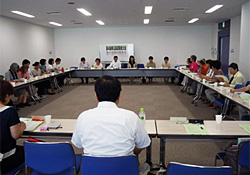
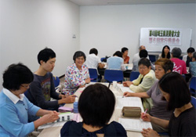

- 【日 時】
- 8月27日(月)10:00～12:00
- 【場 所】
- 浦和コミュニティセンター13集会室
- 【参加者】
- 32人(21団体)＋4人(事務局)
■議 題
- 今回からの参加者は自己紹介をしました。
- 第4回実行委員会、第2回プレ学習会報告と、大会に向けた検討スケジュールについて確認しました。
- 第48回埼玉県消費者大会の基調報告(3次案)について
若者の雇用の安定化、急速に進む高齢化の中での労働人口の比率、｢社会保障と税の一体改革｣の保障の方向について、東電の値上げ申請について、TPPに関しての議論について、消費者教育推進法成立についてなど、追加しながら提案し検討しました。県への要請書、大会アピールについても、提案、検討しました。 - 全体会について
- 参加集約について
チラシの配布が遅くなったため、次回参加集約をとること、目標に向けて参加を呼びかけて頂くよう伝えました。 - 市町村における消費生活関連事業調査、中間報告について
- 分科会について
（1）プログラム内容と役割、時間のながれについて、順序に若干の変更があるということふくみ、大会アピール提案者、オープニング出演者名など、確認しました。
（2）大会当日の要員・時間・弁当について。FAXでの提出も合わせ、説明しました。

集計の状況と読み取れることについて報告しました。
本日討議する内容について説明し、分科会ごとに分かれて話合いました。